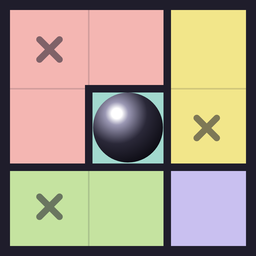

Support
Contact
Email mitchell.puzzles@gmail.com. We usually reply within two days.
How do I play?
Place one marble in every row, column and colored region. Marbles never touch, not even diagonally. Press and hold a square to place a marble, tap it to cross it out (×), and tap a × again to clear it. Slide over several squares to cross them all out. Not sure about a square? Turn on Notes: then taps go round, ×, pencil marble (a maybe), clear. Open "How to play" on the home screen for a short walkthrough.
What are the gray squares in Extreme?
A gray square hides its color. It is one of the colors touching its sides, and a marble on it counts for that hidden color. Solve the board and every color is revealed.
What do the levels mean?
Each level adds new tricks: Easy is crossing out, Medium adds blocking, Hard adds pairs and a quick “what if”, Expert adds the long “what if” and “either way”, and Extreme hides some colors behind gray squares. Every level mixes board sizes. Stuck? Hint shows the next step and the trick behind it.
When does a new daily puzzle start?
Every day at midnight UTC, the same moment all over the world (in the Americas that’s the evening before). So everyone plays the same puzzle on the same day and shares one leaderboard.
Is there a leaderboard?
Yes, for the daily puzzle on iPhone, through Game Center. Your first try at each daily goes on it if you solve it without hints (a restart doesn’t count), and the win card shows how you rank among everyone who has solved the same puzzle so far, like “Top 8% so far”, with a chart of everyone’s times today. Tap it to see the whole leaderboard. It’s also under Stats › Daily.
Why are some boards locked?
Boards open as you go: you can play up to 15 numbers past the highest one you’ve solved, so solving #35 lets you play up to #50. Extreme opens together with Expert. Boards you’ve started or solved stay open, and Plus opens every board.
Are there ads?
Every board is free to play. There’s a small banner at the bottom, and a short ad before about every third puzzle, never in the middle of one and never on the daily puzzle. You can also watch an ad for an extra hint or an extra life. Plus removes the banner and the ads between puzzles.
How do I remove the ads?
Plus removes the banner and the ads between puzzles, and unlocks every board. The optional ads for an extra hint or life stay, for whenever you want one. Open Plus on the home screen.
I have Plus on another phone
Open Plus on the home screen and tap "Restore purchase" while signed in with the same Apple Account or Google account.
How do I cancel Plus?
Plus renews automatically until you cancel. On iPhone, open Settings, tap your name, then Subscriptions. On Android, open Google Play, tap your profile, then Payments & subscriptions. Cancel at least 24 hours before the renewal date.
Will I lose my progress?
Progress is saved on your phone. Deleting the app deletes it.